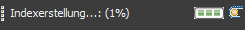
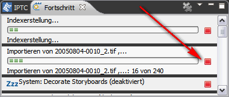

Zuerst brechen Sie die Import-Operation ab. Dazu klicken Sie doppelt
auf die
Fortschritts-Anzeige in der Statuszeile.

Das Fortschritts-Sichtfenster wird geöffnet. Klicken Sie nun auf der rechten Seite des Eintrag für die Import-Operation auf die rote Schaltfläche Abbrechen.

Wenn Sie die Operation wieder aufnehmen möchten, starten Sie die Import-Operation neu mit dem gleichen Ordner oder Gerät. Auf die Frage, was mit bereits vorhandenen Katalogeinträge geschehen soll, antworten Sie Alle überspringen. Auf diese Weise werden nur die restlichen Bilder importiert.